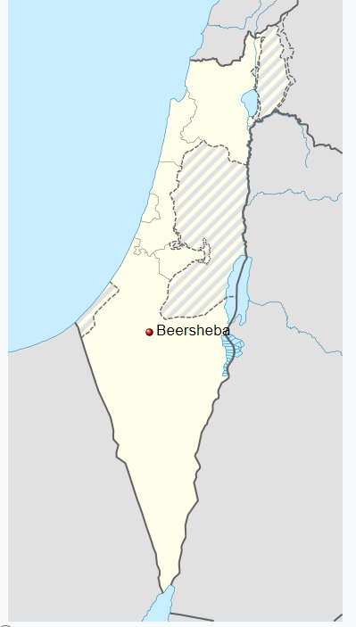

Beersheba (/bɪərˈʃiːbə/; Hebrew: בְּאֵר שֶׁבַע About this soundBe'er Sheva [be(ʔ)eʁ ˈʃeva(ʕ)], Arabic: بئر السبع, lit. Well of the Oath) is the largest city in the Negev desert of southern Israel. Often referred to as the "Capital of the Negev", it is the center of the fourth-most populous metropolitan area in Israel, the eighth-most populous Israeli city with a population of 209,687,[1] and the second-largest city (after Jerusalem) with a total area of 117,500 dunams.
